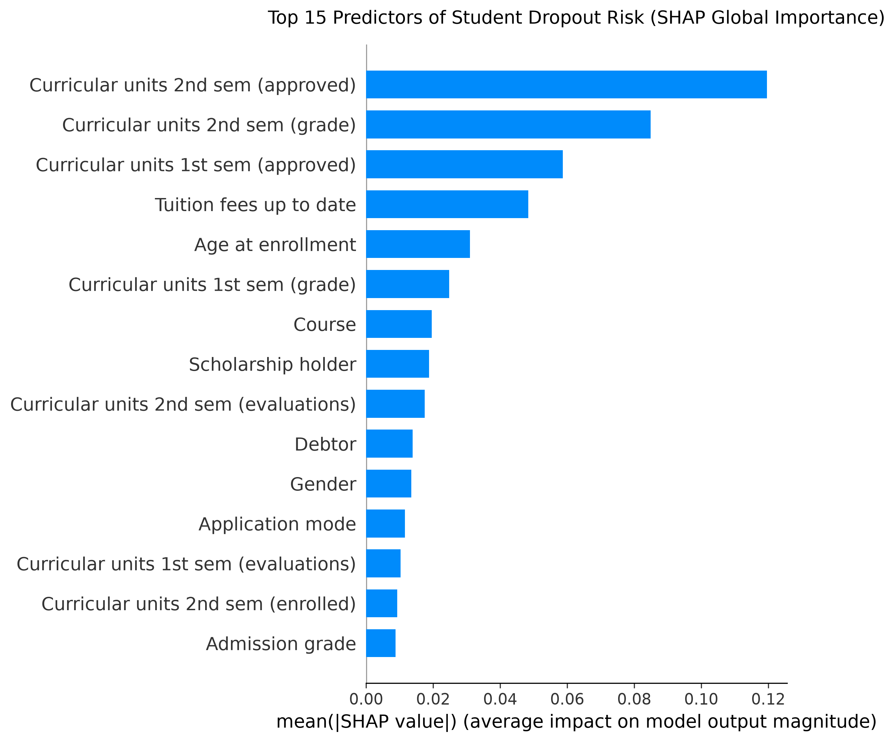

http://127.0.0.1:8000. Please ensure the server is running.
Retention Triage Dashboard
Real-time dropout risk distributions, early warnings, and prioritization triage.
| Rank | Student ID | Risk Score | Urgency | Referral Priority | Assigned Advisor | Status | Action |
|---|
Students Directory
Search, filter, inspect risk attributions, and manage advisor assignments across 4,424 student records.
| Student ID | Risk Score & Tier | Urgency | Referral Priority | Assigned Advisor | Case Status | Actual Outcome | Actions |
|---|
👤 Student Profile
Individual game-theoretic SHAP risk attribution, unscaled real factors, situational briefing, and case interventions.
Student #2237
Red bars increase dropout probability; teal bars exert a protective retention effect.
Generated from empirical SHAP values and student record.
Loading student briefing...
Actionable decision support based on primary risk domains.
🧑💼 Advising Team & Caseloads
Simulated roster of 6 specialized advisors managing academic, financial, and engagement interventions across 1,700 seats.
📋 Capacity-Constrained Auto-Assignment
Priority-ordered triage matching student SHAP risk factors to specialized advisor caseloads with a 1,700 seat cap.
Filter students with Risk Score ≥ 0.30 (High and Medium tiers). Sort in descending order of Referral Priority:
Priority = Risk × (1 + w × Urgency)
Identify each student's top positive SHAP risk driver. Map the feature name to a domain specialty:
• Academic: Approved units, grades, evaluations
• Financial: Tuition fees, debtor status, scholarship
• Engagement: Age, attendance, marital status
Assign the student to the counselor with the matching specialty who has free capacity (< capacity) and the lowest current load.
If matching specialists are full, assign any counselor with free capacity. Once all 1,700 seats are exhausted, designate as: Unassigned - capacity full
| Advisor Name | Domain Specialty | Assigned / Capacity | Caseload Bar | Remaining Slots | Utilization | Action |
|---|
| Rank | Student ID | Risk Score | Referral Priority | Assigned Advisor | Status | Profile Action |
|---|
📈 Model Reports & Acceptance Scorecard
Rigorous empirical cross-validation metrics, automated acceptance criteria verification, and global SHAP interpretability.
Automated pass/fail evaluation against target thresholds defined prior to model training.
| Performance Criterion | Target Threshold | Random Forest (Production) | Logistic Regression (Baseline) | Status Badge | Viva Oral Defense Justification |
|---|
Head-to-head empirical metrics computed across 5 stratified folds (Mean ± Standard Deviation).
| Evaluated Model Architecture | Precision (Mean ± Std) | Recall (Mean ± Std) | F1-Score (Mean ± Std) | ROC-AUC (Mean ± Std) | Status |
|---|
Cohort-wide SHAP attribution analysis across all 4,424 students and 36 predictive features.
Global SHAP Summary Plot (shap_summary.png)

Bar length indicates the mean absolute SHAP value: mean(|SHAP|). Academic progression features in the 2nd and 1st semesters dominate the model's predictive decisions.
Top 10 Global Feature Rankings
| Rank | Feature Name | Mean |SHAP| | Domain |
|---|
An honest, transparent discussion of limitations is required for university oral defense and ethical machine learning deployment:
ℹ️ System Architecture & Viva Defense Dossier
End-to-End Machine Learning Pipeline, Game-Theoretic Explainability (SHAP), and Ethical Decision Support
🛡️ Project Mission & Ethical Non-Punitive Mandate
Core PhilosophyEduGuard is an explainable machine learning decision-support platform designed to empower university academic advisors and counselors with proactive, transparent, and non-punitive early interventions. Rather than acting as an autonomous gatekeeper, EduGuard translates complex statistical attrition probabilities into actionable, human-interpretable risk drivers, enabling counselors to provide targeted academic, financial, and engagement support before students disengage.
⚙️ 7-Stage End-to-End Machine Learning Pipeline
Systematic, mathematically grounded lifecycle from raw institutional cohort data to operational counselor triage
Data Ingestion & Binarization
Ingests the UCI Higher Education dataset (ID 697) comprising 4,424 student records and 36 attributes (demographic, socio-economic, 1st & 2nd semester academic performance).
Leakage-Free 5-Fold Cross-Validation
Evaluates candidate classifiers using Scikit-Learn Pipeline with StandardScaler fitted strictly on training folds to guarantee zero data leakage.
Game-Theoretic Explainability (TreeSHAP)
Computes an exact $4,424 \times 36$ SHAP matrix via Lundberg & Lee TreeExplainer. Decomposes each student's log-odds into additive Shapley values satisfying efficiency and symmetry axioms.
Situational Urgency Scoring
Disentangles statistical historical likelihood from immediate administrative crises via formula:
0.4×(1-Tuition) + 0.3×Debtor + 0.3×(approved=0 ∧ enrolled>0).
Priority-Ranked Triage Queue
Calculates composite Referral Priority: Priority = Risk × (1 + w × Urgency) with tunable weight $w \in [0.0, 2.0]$. Stratifies cohort into High (1,145), Medium (792), and Low (2,487).
Capacity-Constrained Greedy Matching
Matches student primary SHAP domain (Academic, Financial, Engagement) to 6 advisor specialties under institutional caseload constraints (1,700 seats).
Dual-Interface Modern SaaS Architecture
FastAPI async REST backend serving 10 endpoints paired with a responsive Vanilla JS/CSS client (dark/light themes, Chart.js) and legacy Streamlit viva fallback.
state.json
💻 Technical Stack & Implementation Frameworks
Enterprise-ready open-source libraries ensuring high throughput, deterministic reproducibility, and zero build tool overhead
FastAPI
High-performance asynchronous ASGI framework with automatic OpenAPI/Swagger documentation, Pydantic data validation, and sub-millisecond JSON response times.
Scikit-Learn
Robust tabular classification via Random Forest and Logistic Regression, featuring leakage-free Pipeline encapsulation and Stratified 5-Fold Cross-Validation.
SHAP Library
High-speed TreeExplainer implementation computing exact local feature attributions $\phi_i$ with zero sampling variance across all 4,424 student records.
Chart.js (CDN)
Lightweight HTML5 Canvas rendering engine driving interactive risk doughnuts, top-course distributions, and responsive horizontal SHAP feature contribution bar charts.
Pandas & NumPy
Vectorized data processing for rapid cohort slicing, dynamic multi-field sorting, situational urgency calculation, and live CSV report generation.
Vanilla HTML5 / CSS3 / ES6+
Modern CSS custom properties (design tokens), flexbox/grid layouts, debounced search filters, accessible ARIA attributes, and zero npm bundling requirements.
Streamlit
Preserved in app.py on port 8501 as an exploratory dashboard and instant presentation fallback during viva oral examination.
🎓 Viva Voce Oral Defense Preparation Guide
Anticipated academic examination questions, theoretical justifications, and rigorous defenses for university evaluators
Tabular datasets with heterogeneous features (categorical demographics, ordinal socio-economic factors, and continuous GPA/credit counts) are proven by extensive empirical benchmarks (such as Grinsztajn et al., NeurIPS 2022) to perform better or equal on tree-based ensembles compared to Deep Neural Networks.
- Sample Efficiency: With $N = 4,424$ samples, deep neural networks are prone to severe overfitting without aggressive inductive biases or hyperparameter tuning.
- Exact Game-Theoretic XAI: Tree-based models allow polynomial-time exact TreeSHAP computation in $\mathcal{O}(TLD^2)$ time ($T$ trees, $L$ leaves, depth $D$), whereas neural networks require KernelSHAP or Integrated Gradients which introduce sampling variance and high latency.
- Empirical Evidence: Our 5-fold cross-validation demonstrated that Random Forest achieved an outstanding 91.98% ROC-AUC with high stability ($\pm 1.00\%$), outperforming baseline Logistic Regression (91.82%).
The raw UCI dataset contains three target classes: Dropout (1,421), Graduate (2,209), and Enrolled (794). Binarizing into Dropout vs Retained was chosen based on core institutional intervention logic:
- Intervention Asymmetry: From a university retention perspective, active enrolled students and successful graduates represent institutional continuity; the urgent risk cohort requiring advisor resources is solely the Dropout segment.
- Temporal Snapshot Reality: The dataset records an observation snapshot; students labeled as "Enrolled" are actively progressing and have not failed. Merging them into "Retained" prevents misclassifying actively studying students as attrition failures.
- Statistical Optimization: Binarization simplifies multi-class confusion and maximizes statistical recall (71.36%) and precision (87.50%) on the minority class of interest ($32.1\%$).
Data leakage occurs when information from outside the training dataset is inadvertently used to fit feature transformers or model weights. In EduGuard:
- Scikit-Learn Pipeline Encapsulation: Feature preprocessing (e.g.,
StandardScaler) was packaged inside an atomicPipelineobject. The scaler's mean $\mu$ and standard deviation $\sigma$ were computed strictly on the training partition ($k-1$ folds). - Independent Test Evaluation: Test folds were transformed using the frozen training fold statistics without refitting.
- Out-of-Fold Risk Scores: All risk probabilities in
risk_scores.csvrepresent true out-of-fold predictions produced across stratified folds, ensuring that zero student risk scores reflect overfitted training evaluation.
Classical feature importances (such as Gini Impurity or Mean Decrease in Impurity) suffer from two fundamental weaknesses: they are exclusively global (providing zero explanation for why Student #2237 is at risk) and they exhibit significant cardinality bias toward continuous features.
- Cooperative Game Theory Axioms: Lundberg & Lee's TreeSHAP satisfies four formal mathematical properties: Efficiency (local feature attributions sum up to $f(x) - \mathbb{E}[f(x)]$), Symmetry, Dummy Player, and Additivity.
- Local Directionality: While Gini only outputs a non-negative scalar, SHAP indicates both magnitude and direction—showing whether 2nd semester approved units pushed risk up ($+0.34$, red) or buffered risk down ($-0.18$, teal) for a specific individual.
Machine learning models evaluate historical academic trajectory over time (e.g., prior semester GPA, entrance scores). However, university dropout dynamics frequently involve acute, operational crises:
- Imminent Institutional Disqualification: A student with a moderate statistical risk of $0.55$ who has unpaid tuition fees and zero approved units faces immediate administrative disenrollment at the end of the current term.
- Composite Triage Formula: By computing $\text{Priority} = \text{Risk} \times (1 + w \times \text{Urgency})$ with $w \in [0.0, 2.0]$, advisors can elevate students facing acute administrative deadlines above those who have high statistical risk but stable enrollment standing.
Real university counseling centers have finite advisor headcount. In our institutional model, 6 advisors offer a total capacity of 1,700 caseload slots, whereas 1,937 students fall into Medium or High risk tiers:
- Greedy Priority Allocation: Students are sorted descending by composite referral priority. The highest-need students are assigned first to their primary SHAP specialty advisor.
- Graceful Overflow Management: When an advisor reaches 100% capacity, the algorithm falls back to generalist advisors. Once all 1,700 seats are saturated, the remaining 237 students are designated as "Unassigned - capacity full".
- No Silent Loss: Rather than silently discarding or overloading counselors past safe limits, the overflow cohort is prominently surfaced in the UI to justify requests for additional counseling resources.
EduGuard enforces strict ethical design patterns to prevent algorithmic harm:
- Strict Decision-Support Framing: The platform never dispatches automated disciplinary notices or changes enrollment statuses. It serves exclusively as a counselor workbench.
- NoRiskFactorsError Guardrail: If a student has no positive risk factors (e.g., low-risk student), the system renders an explicit informational banner preventing counselors from inventing speculative deficits.
- Audit Trail: All advisor assignments and case status updates are logged with timestamps in
state.json, enabling transparent oversight.
To enable specialized counselor routing, the 36 raw features are mapped into 3 domain clusters:
- Academic Specialty: 1st & 2nd semester approved units, evaluated units, grade averages, previous qualifications, entrance qualifications.
- Financial Specialty: Tuition fees up to date, debtor status, scholarship holder, parental educational/employment status.
- Engagement Specialty: Course selection, daytime vs evening attendance, enrolled units vs approved units ratio, application order, age at enrollment.
The dominant positive SHAP attribution determines whether the student receives an Academic, Financial, or Engagement advisor referral.
Streamlit is excellent for internal exploratory prototypes, but has structural limitations in enterprise settings (session reruns on every interaction, high WebSocket overhead, and coupled state).
- RESTful Decoupling: The FastAPI backend exposes 10 modular REST endpoints with OpenAPI documentation, allowing third-party LMS integration (e.g., Canvas, Moodle, Ellucian Banner).
- Zero-Dependency Client: The Vanilla JS frontend delivers instantaneous client-side filtering, sorting, pagination, and theme switching without npm bundle bloat.
- Defense Redundancy: Preserving
app.pyon port 8501 guarantees high operational resilience during university examination.
Academic rigor requires transparent acknowledgment of constraints:
- Single-Institution Context: Data originates from a single Portuguese polytechnic institute (2008–2019). Institutional tuition structures and academic regulations may differ in other countries.
- Simulated Counselor Capacities: Caseload quotas (1,700 seats) and advisor specialties are modeled from institutional counseling norms rather than institutional telemetry.
- Out-of-Fold Estimation: Risk scores represent out-of-fold probabilistic estimates; prospective real-world deployment would require continuous drift monitoring and annual re-training.
📋 Academic Project Metadata
Formal university examination details and dataset citations